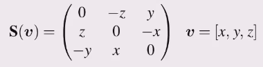

\[\mathbf{S}^T=-\mathbf{S}\] \[\mathbf{S}^T+\mathbf{S}=0\]
Always singular \[det S = 0\]
Any matrix is the sum of symmetric and a skew symmetric matrix
In 3 dimensions 
An alternative way to express the vector cross product \(\mathbf{a} \times \mathbf{b}=\mathbf{S}(\mathbf{a})\mathbf{b}\)